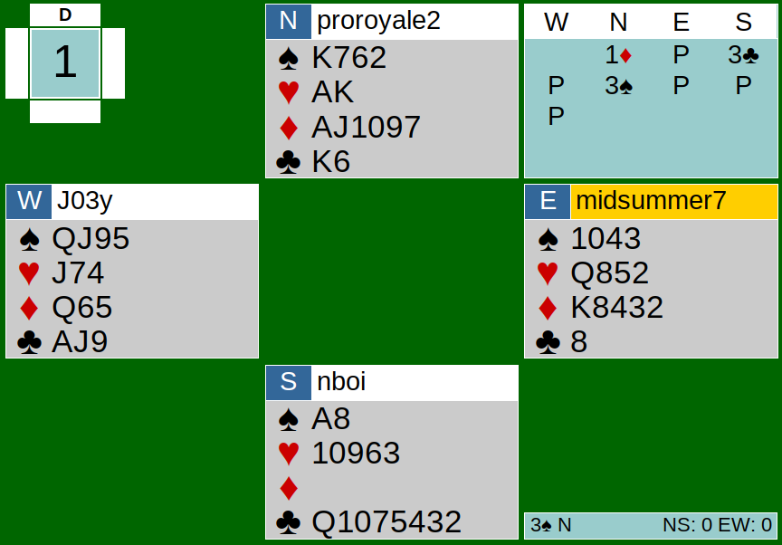
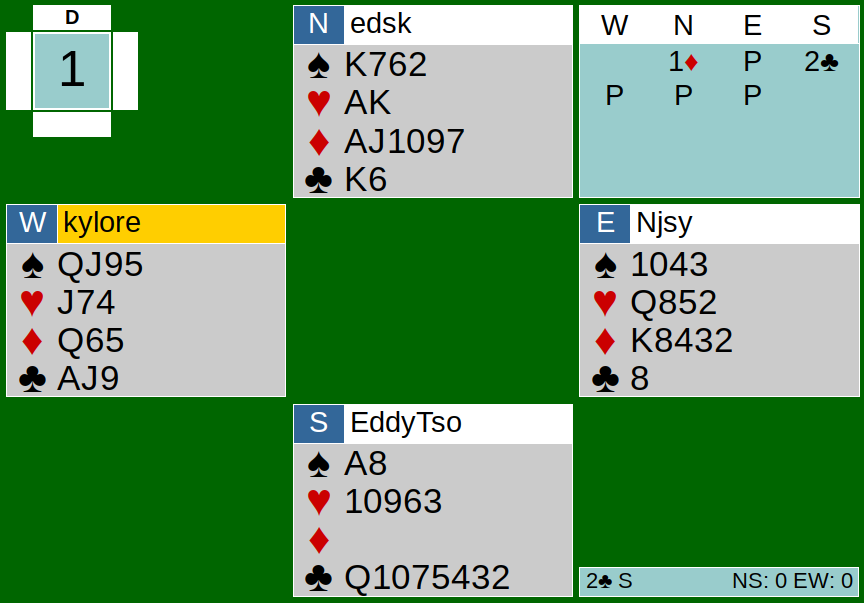

Instead of celebrating National Free Slurpee Day with a free Slurpee from 7-Eleven, CK Team Game players obviously decided to celebrate with a fun team game. It was an intense match between Team Zoomers and Team Boomers. On Team Zoomers, we had Nathan, Kyle, Aldwyn, and Nancy. On Team Boomers, we had Joe, Joey, Eddy, and Edmond. Sounds pretty competitive already! Let’s analyze Board 1 today, the board that started the game off.


The bidding began with a 1D opening by North, showing an opening hand and 3+ diamonds. At the Zoomer’s table (Nathan and Kyle), South responded with a jump to 3C. This is a weak jump shift. A 2-level jump over a 1-level suit opening would show minimal points (probably less than 8) and a 6-card suit. Here, South’s hand fits the criteria-- but I think the problem here is that South’s club suit is very weak. North showed his 4-card spade suit by bidding 3S and the auction ended there. Since North knows South is weak and has a good shape, North shouldn’t try to find a spade fit at this point. The best thing was to pass the weak jump shift. But now that North bid spades, South knowing they only have a 6-card fit, should at least rebid his club suit to avoid being in a spade contract.
Over at the other table, South bid 2C after the 1D bid. This is two over one (2/1). In short, this is a game-forcing bid that shows opening hand values. You cannot pass to this until game is reached. Please read the third lesson in one of my other articles for more 2/1 description. Here, 2C should not have been bid. It turns out this mistake was a positive score for their team though.
At the Zoomers’ table with the contract of 3S, East led the singleton 8 of clubs. This was the optimal lead, as it allowed EW to take the first two tricks- when West returned a club, East ruffed. Interestingly enough, West led trump. NS won with the Ace and began pulling all the trump from EW. When you are declarer and your side does not have the majority of trump, I feel that drawing all the trump is a bit risky, especially when you are also missing a few honors. In this hand, since there is a suit to set up, it makes sense to pull all the trump-- but without transportation to the clubs on the board, where is North going to take his tricks? After pulling all the trump, a diamond was led by West. North quickly takes it with his Ace. North should have ducked here and played low because now the King and Queen are set up. North then desperately took his AK heart winners, which also set up his opponent’s hearts. Ducking is so important here because without ducking, EW would have a harder time running their set-up hearts and diamonds. North ended up losing the rest. The final result was 3S down 4 by North.
At the Boomers’ table, West correctly led the Queen of spades from QJxx. South played the King in dummy and played low in his hand (Ax). A friendly reminder to play high card on the short side, meaning play low in the dummy and cover with the Ace in the doubleton side. It blocks transportation when a high card on the short side isn’t played. The next several tricks go by as South blindly takes his winners without pulling trump. What if the distribution wasn’t as even as it was here? South would lose unnecessary tricks. Lucky for him, this time he didn’t get ruffed. NS ended up taking what they could for a final result of 2C+2 by South.
This board led to an 8 IMP swing for Team Boomers. What a good start to the game for them. Sadly, they weren’t able to keep it up as the Team Zoomers coldly blitzed them and took home the W on National Slurpee Day. Fear not for Team Boomers’ chance for redemption is coming!